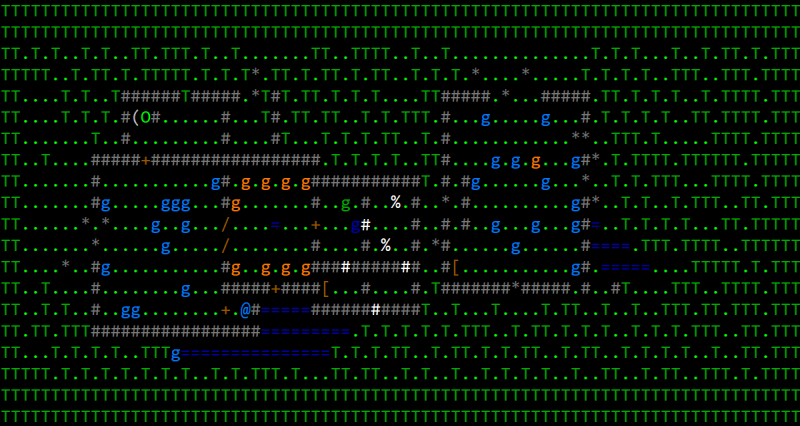

 Inhabitants: g - goblins and goblin rockthrowers g - goblin berserkers g - goblin chieftain g - hobgoblin leader @ - swordsman O - ogre Symbols: ([[ - piles of items # - secret passages + - locked doors % - bones * - rocks and huge rocks